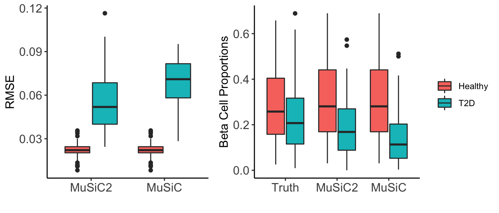
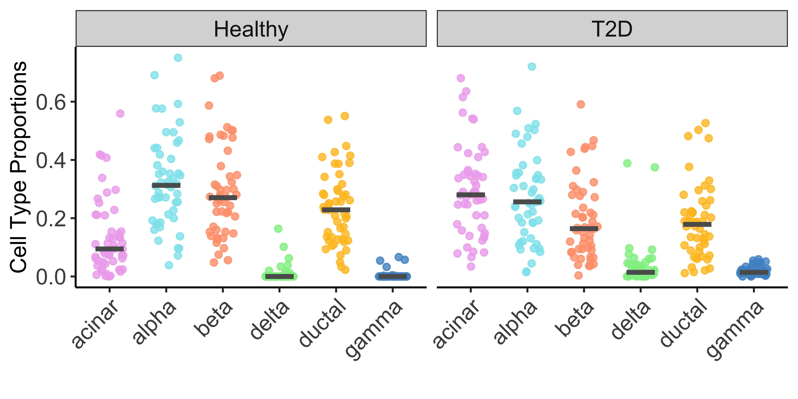
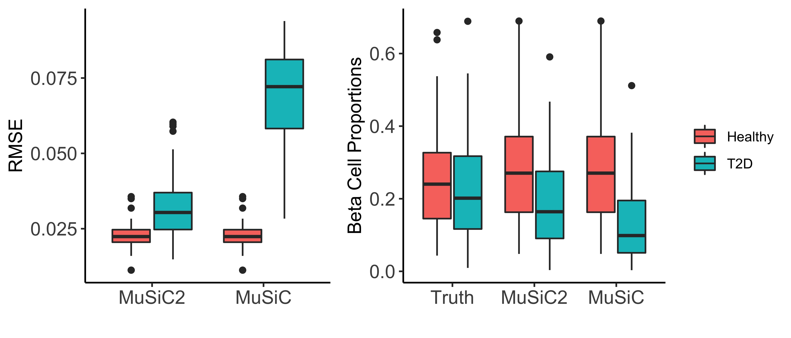

MuSiC2: cell type deconvolution for multi-condition bulk RNA-seq data
Jiaxin Fan
Food and Drug Adminstration, MD, USAXuran Wang
SEAVER Autism Center, ISMMS, New York, USASource:
vignettes/pages/MuSiC2.Rmd
MuSiC2.RmdIntroduction
This vignette provides a walk through tutorial on how to use
MuSiC2 to estimate cell type proportions for bulk RNA-seq
data using scRNA-seq data as reference when the bulk and scRNA-seq data
are generated from samples with multiple clinical conditions. The codes
of MuSiC2 can also be found at this GitHub Repo.
Installation
If you have never used MuSiC before, please install this
integrated package for both MuSiC and
MuSiC2.
# install devtools if necessary
install.packages('devtools')
# install the MuSiC package
devtools::install_github('xuranw/MuSiC')
# load
library(MuSiC)If you have installed MuSiC version 0.2.0 or lower, a
separate installation of MuSiC2 uses following:
# install devtools if necessary
if (!"devtools" %in% rownames(installed.packages())) {
install.packages('devtools')
}
# install the MuSiC2 package
if (!"MuSiC2" %in% rownames(installed.packages())) {
devtools::install_github('Jiaxin-Fan/MuSiC2')
}
# load
library(MuSiC2)Data
Two types of input data:
Bulk RNA sequencing expression data collected from samples with 2 different clincial conditions, e.g., healthy and diseased. These are the data we want to deconvolve.
Single-cell RNA sequencing (scRNA-seq) expression data collected from samples with single condition, e.g., healthy. The cell types of scRNA-seq are pre-determined. These serve as the reference for estimating cell type proportions of the bulk data.
Both datasets should be in the form of
ExpressionSet. The details of constructing
ExpressionSet can be found on this
page.
UPDATE: Per users’ requests, we have updated
MuSiC2functions (version 1.0.0) andSingleCellExperimentobjects are used to handle single cell references, where sparse matrices are compatible as read counts. The details of constructingSingleCellExperimentobjects can be found on this page.Datasets described in the table above are in
SingleCellExperiment(single cell references) orExpressionSet(bulk). They are available at the data download page.
MuSiC2 Deconvolution
MuSiC2 is an iterative algorithm aiming to improve cell type deconvolution for bulk RNA-seq data when the bulk data and scRNA-seq reference are generated from samples with different clinical conditions. The key idea of MuSiC2 is that when the bulk and single-cell samples are from different clinical conditions, the majority of genes shall still have similar cell-type-specific gene expression patterns between conditions. By removing genes with cell-type-specific differential expression (DE) between conditions from the single-cell reference, MuSiC2 can refine the reference gene list and yield more accurate cell type proportion estimates.
Two-step iterative deconvolution
To deconvolve bulk RNA-seq samples from both Healthy and Diseased conditions and use scRNA-seq data generated only from the Healthy condition as the reference, MuSiC2 iterates over 2 steps:
Step 1: we use MuSiC Wang et al. (2019) to infer the cell type proportions of the bulk samples under both conditions by borrowing information from the scRNA-seq data;
Step 2: for samples within each condition, we deconvolve the bulk-level expression over the cell type proportion estimates obtained in Step 1 to infer the cell-type-specific mean expression for each gene and identify cell-type-specific DE genes between conditions. By removing genes with cell-type-specific DE from the scRNA-seq data, we can update the cell type proportion estimates in Step 1 for bulk samples generated under the Diseased condition.
By alternating between cell type deconvolution (Step 1) and
cell-type-specific DE gene detection and removal (Step 2),
MuSiC2 gradually refines the list of “stable” genes
retained in the scRNA-seq reference. As a result, it improves the cell
type proportion estimation for the diseased samples. An overview of
MuSiC2 is in the Figure below. 
Details of MuSiC2
One ad-hoc method to detect the cell-type-specific DE genes is to employ a resampling procedure to achieve a reliable estimate. Specifically, at each resampling iteration, we generate a subset of samples by random sampling without replacement under each clinical condition and compute the log fold change of cell-type-specific expression between conditions, \[logFC_g^k=\frac{\mu_{g, diseased}^k}{\mu_{g, healthy}^k}.\]
We use a T statistic \(T_g^k\) as a metric of cell-type-specific DE. \(T_g^k\) is the absolute value of the ratio of the mean to the standard deviation (SD) of the \(logFC_g^k\) over all resamples. Genes with \(T_g^k\) in the top 5% for common cell types, i.e., cell types with average proportion ≥ 10%, or in the top 1% for rare cell types, i.e., cell types with average proportion < 10%, and with absolute mean log fold change over resamples \(\ge\) log(2) are considered as cell-type-specific DE genes. Since fold change is sensitive to genes with low expression, we suggest that genes with bulk-level average sequencing depth < 20 are retained as “stable” genes and excluded from the cell-type-specific DE detection. We further filter the genes by their expression levels in the random samples. Specifically, we compute the mean of \(\mu_{g, healthy}^k\) and \(\mu_{g, diseased}^k\) over the resamples and retain genes with cell-type-specific expression in the bottom 5% for samples in both conditions as “stable” genes and exclude them from the cell-type-specific DE detection.
Besides the ad hoc method described above, MuSiC2 is a general framework that can incorporate other existing methods for cell-type-specific DE gene detection as long as the method uses bulk RNA-seq data and estimated (or ‘known’) cell-type proportions as inputs. For example, TOAST (Li and Wu (2019)) defines cell-type-specific DE genes based on a P-value cutoff.
For additional details, see the Methods session of the MuSiC2 manuscript.
Sample Analysis
For illustration purpose, in this tutorial, we deconvolved the
benchmark bulk RNA-seq data, which contain raw RNA-seq read counts and
sample annotation data for 100 healthy and 100 diseased (i.e., Type 2
diabetes (T2D)) samples simulated based on pancreatic islets scRNA-seq
RNA-seq data from Segerstolpe et al.
(2016). The procedure for generating the benchmark dataset can be
found in the Methods session of the MuSiC2 manuscript. We
deconvolved the benchmark bulk RNA-seq data using scRNA-seq data
generated from 6 healthy subjects by Segerstolpe
et al. (2016). Both datasets can be found on this page.
## Bulk RNA-seq data
benchmark.eset = readRDS("https://xuranw.github.io/MuSiC/data/bulk-eset.rds")
benchmark.eset
## ExpressionSet (storageMode: lockedEnvironment)
## assayData: 10000 features, 200 samples
## element names: exprs
## protocolData: none
## phenoData
## sampleNames: 1 10 ... 200 (200 total)
## varLabels: sampleID group
## varMetadata: labelDescription
## featureData: none
## experimentData: use 'experimentData(object)'
## Annotation:
# clinical conditions
table(benchmark.eset$group)
##
## healthy t2d
## 100 100
bulk.control.mtx = exprs(benchmark.eset)[, benchmark.eset$group == 'healthy']
bulk.case.mtx = exprs(benchmark.eset)[, benchmark.eset$group == 't2d']
## scRNA-seq data
seger.sce = readRDS("https://xuranw.github.io/MuSiC/data/EMATBsce_healthy.rds")
seger.sce
#class: SingleCellExperiment
#dim: 25453 1097
#metadata(0):
#assays(1): counts
#rownames(25453): SGIP1 AZIN2 ... KIR2DL2 KIR2DS3
#rowData names(1): gene.name
#colnames(1097): AZ_A10 AZ_A11 ... HP1509101_P8 HP1509101_P9
#colData names(4): sampleID SubjectName cellTypeID cellType
#reducedDimNames(0):
#mainExpName: NULL
#altExpNames(0):Cell Type Deconvolution
We propose 2 functions for MuSiC2 deconvolution. One uses the ad hoc method with T statistics introduced in the manuscript for defining cell-type-specific DE genes. The other uses TOAST (Li and Wu (2019)) with P-value cutoffs for defining cell-type-specific DE genes. MuSiC2 with TOAST runs faster and converges faster than MuSiC2 with T statistics as it does not require resamplings. Therefore, based on our simulation and real data studies, we recommend using TOAST (Li and Wu (2019)) with P-value cutoffs for deconvolving bulk samples with healthy single cell reference, and ad hoc T statistics for deconvolving bulk samples with diseased single cell reference. However, when the difference between the diseased and healthy bulk samples is small, or the sample sizes are small, TOAST (Li and Wu (2019)) may not be able to detect any cell-type-specific DE genes, and we recommend using MuSiC2 with T statistics under this case.
MuSiC2 T statistics
To detect cell-type-specific DE genes using T statistics, the cell
type proportions are estimated by the function
music2_prop_t_statistics. The essential inputs are:
-
bulk.eset: ExpressionSet of bulk data; -
sc.sce: SingleCellExperiment of single cell data; -
condition: character, the phenoData of bulk dataset used for indicating clinical conditions; -
control: character, the clinical condition of bulk samples that is the same as the clinical condition of the single cell samples; -
case: character, the clinical condition of bulk samples that is different from the clinical condition of the single cell samples; -
clusters: character, the phenoData from single cell dataset used as clusters; -
samples: character, the phenoData from single cell dataset used as samples; -
select.ct: vector of cell types. Default isNULL, which uses all cell types provided in the single-cell data; -
n_resample: numeric, number of resamples used for detecting cell-type-specific DE genes. Default is 20; -
sample_prop: numeric, proportion of samples to be randomly sampled without replacement under each clinical condition for each resample. Default is 0.5; -
prop_r: numeric, cutoff on cell type proportions for defining rare cell types. Cell types with mean proportion across samples in bulk data < prop_r will be characterized as rare cell types. Otherwise, will be characterized as common cell types. Default is 0.1; -
cutoff_c: numeric, cutoff on the upper quantile of \(T_g^k\) statistics for detecting cell-type-specific DE genes for common cell types (i.e., cell type proportion \(\ge\) 0.1). Default is 0.05; -
cutoff_r: numeric, cutoff on the upper quantile of \(T_g^k\) statistics for detecting cell-type-specific DE genes for rare cell types (i.e., cell type proportion < 0.1). Default is 0.01; -
cutoff_fc: numeric, cutoff on log fold change over resamples. Genes with absolute value of the mean log fold change calculated over all resamples < log(cutoff_fc) are excluded from cell-type-specific DE genes. Default is 1.5;
The output of music2_prop_t_statistics is a list with
elements:
-
Est.prop: matrix, cell type proportion estimates; -
convergence: logical, whether MuSiC2 converged or not; -
n.iter: numeric, number of iterations; -
DE.genes: vector, cell-type-specific DE genes being removed;
For illustration purpose, we constrained our analysis on 6 well-studied cell types: acinar, alpha, beta, delta, ductal and gamma. Figure 2 below showed the estimated cell type proportion of MuSiC2 separated by disease status (e.g., healthy and T2D).
# music2 deconvolution
set.seed(1234)
est = music2_prop_t_statistics(bulk.control.mtx = bulk.control.mtx, bulk.case.mtx = bulk.case.mtx, sc.sce = seger.sce, clusters = 'cellType', samples = 'sampleID', select.ct = c('acinar','alpha','beta','delta','ductal','gamma'), n_resample=20, sample_prop=0.5,cutoff_c=0.05,cutoff_r=0.01)
est.prop = est$Est.prop
# plot estimated cell type proportions
prop_all = cbind('proportion'=c(est.prop), 'sampleID'=rep(rownames(est.prop),times=ncol(est.prop)), 'celltype'=rep(colnames(est.prop), each=nrow(est.prop)))
prop_all = as.data.frame(prop_all)
prop_all$proportion = as.numeric(as.character(prop_all$proportion))
prop_all$group = ifelse(prop_all$sampleID %in% seq(from=1, to=100, by=1), 'Healthy', 'T2D')
cols <-c("alpha" = "cadetblue2", "beta" = "lightsalmon1", "delta" = "palegreen2", "ductal" = "goldenrod1",
"gamma"="steelblue3", "acinar" = "plum2")
ggplot(prop_all, aes(x=celltype, y=proportion, color=celltype)) + xlab('')+
geom_jitter(width=0.25,alpha=0.8)+ylab('Cell Type Proportions')+theme_bw()+
stat_summary(fun = median,
geom = "crossbar", width = 0.5,size=0.5,color='gray36')+
facet_grid(.~group)+
theme(plot.title = element_text(hjust = 0.5, size=12),
axis.text.x = element_text(size=12,angle = 45,hjust=1),
axis.text.y = element_text(size=12),
axis.title.x = element_text(size=12),
axis.title.y = element_text(size=12),
axis.line = element_line(colour = "black"),
strip.text.x = element_text(size = 12),
panel.grid.major = element_blank(),
panel.grid.minor = element_blank(),
panel.border = element_blank(),
panel.background = element_blank(),
legend.position = 'none')+
scale_color_manual(values=cols)
Bechmark Evaluation
We also deconvolved the benchmark bulk RNA-seq data using MuSiC Wang et al. (2019), and evaluated the accuracy
of both deconvolution methods by comparing the estimated cell type
proportions obtained by MuSiC2 and by MuSiC to
the true proportions.
ALL=cbind(prop_all[,-4],'Method'='MuSiC2')
# MuSiC
bulk.mtx = exprs(benchmark.eset)
prop_music=music_prop(bulk.mtx = bulk.mtx, sc.sce = seger.sce,
clusters = 'cellType', samples = 'sampleID',
select.ct = c('acinar','alpha', 'beta', 'delta', 'ductal','gamma'), verbose = F)$Est.prop.weighted
prop_all = cbind('proportion'=c(prop_music),'celltype'=rep(colnames(prop_music), each=nrow(prop_music)), 'sampleID'=rep(rownames(prop_music),times=ncol(prop_music)),'Method'='MuSiC')
prop_all=as.data.frame(prop_all)
prop_all$proportion=as.numeric(as.character(prop_all$proportion))
ALL=rbind(ALL,prop_all)
# true proportion
load('./data/true_proportion.RData')
prop_all=cbind(prop_all,'Method'='Truth')
ALL=rbind(ALL,prop_all)
ALL$group = ifelse(ALL$sampleID %in% seq(from=1, to=100, by=1), 'Healthy', 'T2D')
ALL$Method = factor(ALL$Method, levels=c('Truth','MuSiC2','MuSiC'))Below we present the individual-level root mean square error (RMSE)
across cell types for the two deconvolution methods separated by disease
status (e.g., healthy and T2D) (Figure 3: left). As expected, because
MuSiC2 only refines the gene list in the single cell reference when
deconvolving bulk samples generated from clinical condition that differs
from the single cell data, MuSiC and MuSiC2
had exactly the same performance for healthy samples with estimation
bias close to 0. For diseased samples, MuSiC2 improved the
estimation accuracy, highlighting the significance of gene selection for
deconvolution. Especially for beta cells, MuSiC2 produced much more
accurate cell type proportion estimates for diseased bulk samples than
MuSiC, which suffered from severe underestimation (Figure 3: right).
# root mean square error
RMSE <- function(proportion.x, proportion.y){
sqrt(mean((proportion.x-proportion.y)^2))}
prop_bias = merge(ALL[ALL$Method %in% c('MuSiC','MuSiC2'),], ALL[ALL$Method=='Truth',-4], by=c('sampleID','celltype','group'))
bias = prop_bias %>% dplyr::group_by(Method, sampleID, group) %>% dplyr::summarise(rmse=RMSE(proportion.x, proportion.y))
p1=ggplot(bias, aes(x=Method, y=rmse, fill=group)) + geom_boxplot()+
ylab('RMSE')+xlab('')+theme_bw()+
theme(axis.text.x = element_text(size=12),
axis.text.y = element_text(size=12),
axis.title.x = element_text(size=12),
axis.title.y = element_text(size=12),
axis.line = element_line(colour = "black"),
strip.text.x = element_text(size = 12),
panel.grid.major = element_blank(),
panel.grid.minor = element_blank(),
panel.border = element_blank(),
panel.background = element_blank(),
legend.position = 'none',
legend.title = element_blank())
# beta cell
p2=ggplot(ALL[ALL$celltype=='beta',], aes(x=Method, y=proportion, fill=group)) + geom_boxplot()+
ylab('Beta Cell Proportions')+xlab('')+theme_bw()+
theme(axis.text.x = element_text(size=12),
axis.text.y = element_text(size=12),
axis.title.x = element_text(size=12),
axis.title.y = element_text(size=12),
axis.line = element_line(colour = "black"),
strip.text.x = element_text(size = 12),
panel.grid.major = element_blank(),
panel.grid.minor = element_blank(),
panel.border = element_blank(),
panel.background = element_blank(),
legend.position = 'right',
legend.title = element_blank())
grid.arrange(p1,p2,widths=c(3,4))
Using TOAST
As a general framework, MuSiC2 can incorporate other existing methods
for cell-type-specific DE gene detection. Detecting cell-type-specific
DE genes using TOAST (Li and Wu (2019))
with P-value cutoffs, the cell type proportions are estimated by the
function music2_prop_toast. The essential inputs are:
-
bulk.eset: ExpressionSet of bulk data; -
sc.sce: SingleCellExperiment of single cell data; -
condition: character, the phenoData of bulk dataset used for indicating clinical conditions; -
control: character, the clinical condition of bulk samples that is the same as the clinical condition of the single cell samples; -
case: character, the clinical condition of bulk samples that is different from the clinical condition of the single cell samples; -
clusters: character, the phenoData from single cell dataset used as clusters; -
samples: character, the phenoData from single cell dataset used as samples; -
prop_r: numeric, cutoff on cell type proportions for defining rare cell types. Cell types with mean proportion across samples in bulk data < prop_r will be characterized as rare cell types. Otherwise, will be characterized as common cell types. Default is 0.1; -
select.ct: vector of cell types. Default isNULL, which uses all cell types provided in the single-cell data; -
cutoff_c: numeric, cutoff on FDR adjusted p-values for defining cell-type-specific DE genes for common cell types. Genes with FDR adjusted p-value <= cutoff_c are considered as cell-type-specific DE genes. Default is 10^(-3); -
cutoff_r: numeric, cutoff on FDR adjusted p-values for for defining cell-type-specific DE genes for rare cell types. Genes with FDR adjusted p-value <= cutoff_r are considered as cell-type-specific DE genes. Default is 10^(-3); -
cap: numeric, cutoff on maximum number of genes removed for each cell type. For each cell type, at the maximum, genes with FDR adjusted p-value within the lower cap quantile are removed. Default is 0.3;
The output of music2_prop_toast is a list with
elements:
-
Est.prop: matrix, cell type proportion estimates; -
convergence: logical, whether MuSiC2 converged or not; -
n.iter: numeric, number of iterations; -
DE.genes: vector, cell-type-specific DE genes being removed;
Again, we constrained our analysis on 6 well-studied cell types: acinar, alpha, beta, delta, ductal and gamma. Figure 4 below showed the estimated cell type proportion of MuSiC2 separated by disease status (e.g., healthy and T2D).
# music2 deconvolution with TOAST
set.seed(123)
est = music2_prop_toast(bulk.eset = benchmark.eset, sc.sce = seger.sce, condition='group', control='healthy',case='t2d', clusters = 'cellType', samples = 'sampleID', select.ct = c('acinar','alpha','beta','delta','ductal','gamma'), prop_r=0.1, cutoff_c=10^(-3), cutoff_r=10^(-3), cap=0.3)
est.prop=est$Est.prop
# plot estimated cell type proportions
prop_all = cbind('proportion'=c(est.prop), 'sampleID'=rep(rownames(est.prop),times=ncol(est.prop)), 'celltype'=rep(colnames(est.prop), each=nrow(est.prop)))
prop_all = as.data.frame(prop_all)
prop_all$proportion = as.numeric(as.character(prop_all$proportion))
prop_all$group = ifelse(prop_all$sampleID %in% seq(from=1, to=100, by=1), 'Healthy', 'T2D')
cols <-c("alpha" = "cadetblue2", "beta" = "lightsalmon1", "delta" = "palegreen2", "ductal" = "goldenrod1",
"gamma"="steelblue3", "acinar" = "plum2")
ggplot(prop_all, aes(x=celltype, y=proportion, color=celltype)) + xlab('')+
geom_jitter(width=0.25,alpha=0.8)+ylab('Cell Type Proportions')+theme_bw()+
stat_summary(fun = median,
geom = "crossbar", width = 0.5,size=0.5,color='gray36')+
facet_grid(.~group)+
theme(plot.title = element_text(hjust = 0.5, size=12),
axis.text.x = element_text(size=12,angle = 45,hjust=1),
axis.text.y = element_text(size=12),
axis.title.x = element_text(size=12),
axis.title.y = element_text(size=12),
axis.line = element_line(colour = "black"),
strip.text.x = element_text(size = 12),
panel.grid.major = element_blank(),
panel.grid.minor = element_blank(),
panel.border = element_blank(),
panel.background = element_blank(),
legend.position = 'none')+
scale_color_manual(values=cols)
Similarly, we evaluated the accuracy of both deconvolution methods by comparing the estimated cell type proportions obtained by MuSiC2 and by MuSiC to the true proportions. Below we present the individual-level RMSE across cell types for the two deconvolution methods separated by disease status (e.g., healthy and T2D) (Figure 5: left), and estimated beta cell type proportions for the two deconvolution methods separated by disease status (e.g., healthy and T2D)
ALL=cbind(prop_all[,-4],'Method'='MuSiC2')
# MuSiC
ALL=rbind(ALL,prop_all_music)
# true proportion
ALL=rbind(ALL,prop_all_truth)
ALL$group = ifelse(ALL$sampleID %in% seq(from=1, to=100, by=1), 'Healthy', 'T2D')
ALL$Method = factor(ALL$Method, levels=c('Truth','MuSiC2','MuSiC'))
# root mean square error
prop_bias = merge(ALL[ALL$Method %in% c('MuSiC','MuSiC2'),], ALL[ALL$Method=='Truth',-4], by=c('sampleID','celltype','group'))
bias = prop_bias %>% dplyr::group_by(Method, sampleID, group) %>% dplyr::summarise(rmse=RMSE(proportion.x, proportion.y))
p1=ggplot(bias, aes(x=Method, y=rmse, fill=group)) + geom_boxplot()+
ylab('RMSE')+xlab('')+theme_bw()+
theme(axis.text.x = element_text(size=12),
axis.text.y = element_text(size=12),
axis.title.x = element_text(size=12),
axis.title.y = element_text(size=12),
axis.line = element_line(colour = "black"),
strip.text.x = element_text(size = 12),
panel.grid.major = element_blank(),
panel.grid.minor = element_blank(),
panel.border = element_blank(),
panel.background = element_blank(),
legend.position = 'none',
legend.title = element_blank())
# beta cell
p2=ggplot(ALL[ALL$celltype=='beta',], aes(x=Method, y=proportion, fill=group)) + geom_boxplot()+
ylab('Beta Cell Proportions')+xlab('')+theme_bw()+
theme(axis.text.x = element_text(size=12),
axis.text.y = element_text(size=12),
axis.title.x = element_text(size=12),
axis.title.y = element_text(size=12),
axis.line = element_line(colour = "black"),
strip.text.x = element_text(size = 12),
panel.grid.major = element_blank(),
panel.grid.minor = element_blank(),
panel.border = element_blank(),
panel.background = element_blank(),
legend.position = 'right',
legend.title = element_blank())
grid.arrange(p1,p2,widths=c(3,4))